Our Story
From a physical therapy class in 2013 to a private canal tour in Amsterdam in 2024.
Cynthia and Nicko Meet — 2013

We met on October 10, 2013 in our physical therapy class. This class consisted of students across several high schools. Nicko and I went to rival high schools and were both in 11th grade at the time. Our class required students to partner up to practice different skills (wrapping, taping, etc) and my normal partner picked someone else that day. I was so embarrassed. I thought quick on my feet and saw Nicko; I asked him if he had a partner, and he told me no. I asked if he wanted to be partners, and he said yes! This partnership has been going strong ever since.
Cynthia and Nicko Spend Halloween Together — 2013

Cynthia was invited to hang out and go Trick-or-Treating with a couple of my friends. Mohmeet was one of the friends involved and this was sort of a trial to see how she would fair around them. It ended up being a Nicko roasting session and for that reason they claimed it to be a great success!
Cynthia and Nicko go on their first Date — 2013

The movie we went to go see was "Gravity" starring Sandra Bullock and George Clooney. I snuck in a couple of cheeseburgers from McDonald's to share with Cynthia, but she declined. I had finally mustered up the courage to hold her hand... turns out by the time I did, the credits started to roll.
Nicko asks Cynthia to be his Girlfriend — 2013

On December 14, 2013, I officially asked Cynthia to be my girlfriend! This was after watching a scary movie.
Cynthia Invites Nicko to YHS Homecoming — 2014
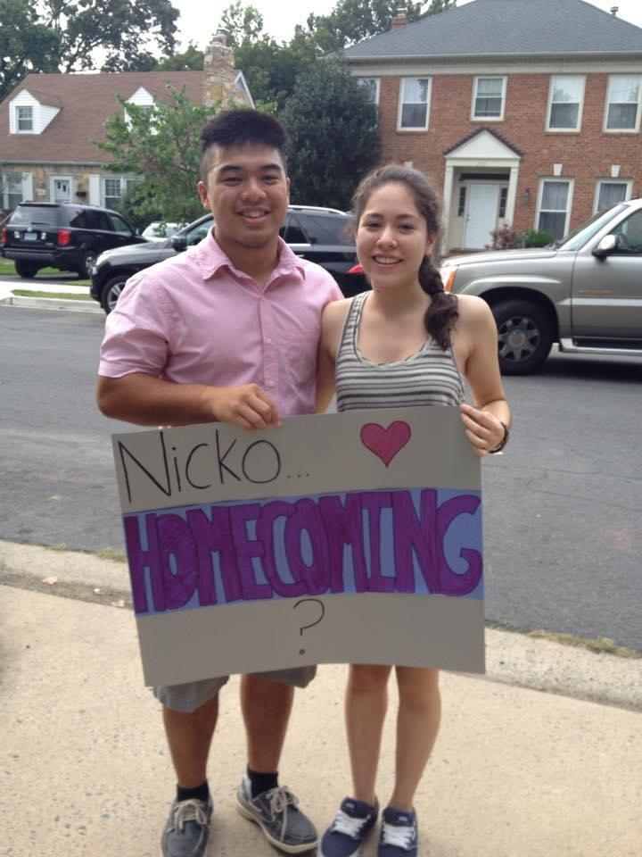
I asked Nicko to my senior year high school homecoming. I had my parents drive me to his house so that I could ask him. He said yes!
Nicko Invites Cynthia to W-L Homecoming — 2014

I had a lot of great help from my family to be able to set this up. I asked Cynthia to homecoming after one of my football games! Shout out to Tita Nora and Mama Titi who created these beautiful signs that eventually led to Cynthia to saying yes!
Cynthia and Nicko's One Year Anniversary — 2014
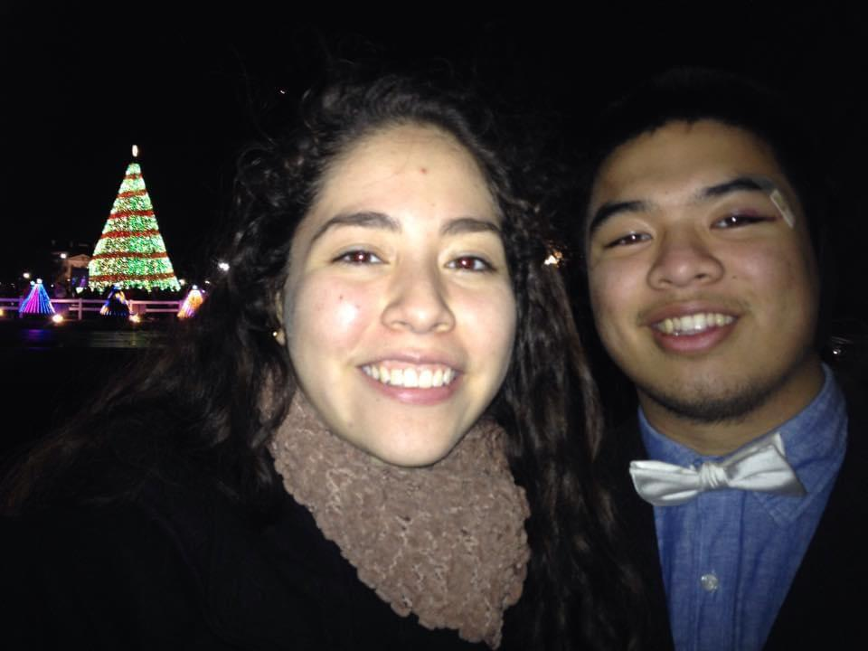
Our first year together! We celebrated by enjoying dinner at Match Box in D.C.
Nicko's High School Prom W-L — 2015

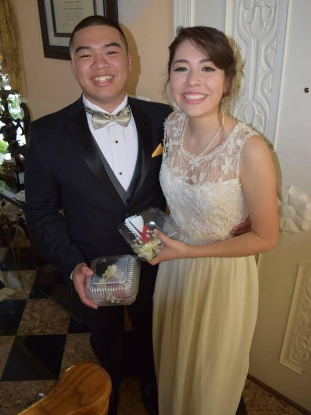
With two different high schools came double the fun! Here we are taking photos for my prom! Afterwards we enjoyed a nice dinner at The Carlyle, one of our favorite restaurants before making our way to the prom!
Cynthia’s High School Prom YHS — 2015
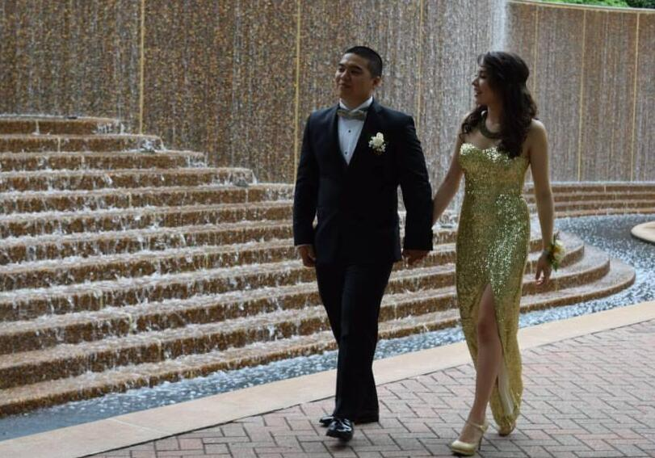

Here are the photos of the second prom for YHS! We went to Carlyle for dinner again!
Nicko Drops off Cynthia at VT — 2015
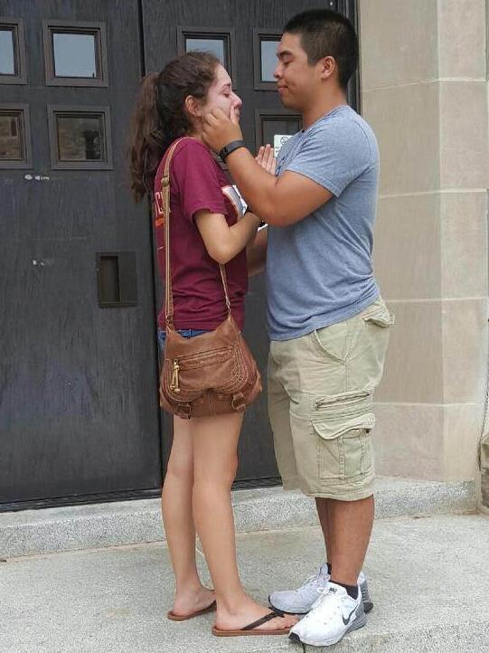
After high school I started school at Virginia Tech and Nicko stayed in Arlington to attend Northern Virginia Community College. All of the goodbyes were extremely hard. This was the start of a long distance relationship for us. Thank goodness for Skype!
Nicko Visits Cynthia at VT — 2016
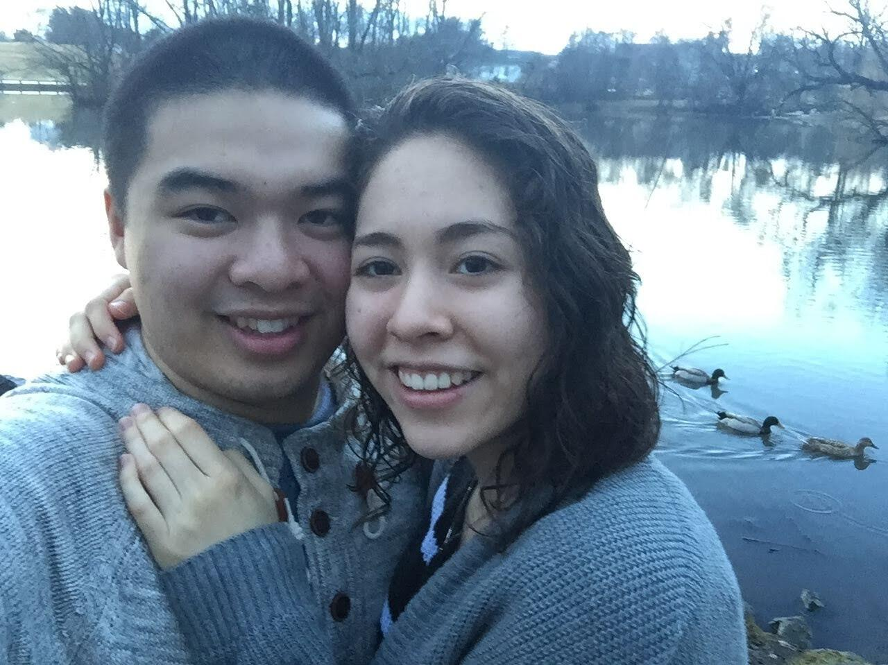
I came to visit Cynthia as much as I could at Virginia Tech during our long distance from each other. Here we are at Duck Pond.
Cynthia and Nicko Reunited at GMU — 2017
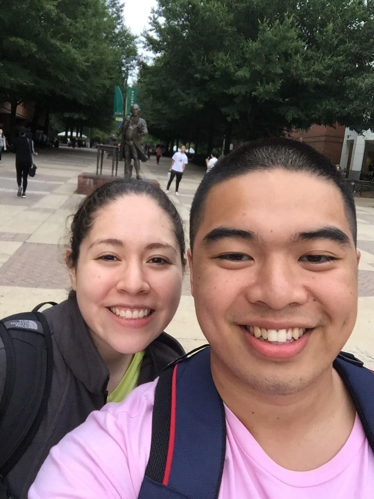
We both eventually transferred to GMU. I majored in Community Health while Nicko majored in Rehabilitation Science. Here we are on the first day of school.
Cynthia and Nicko Visit Las Vegas — 2018
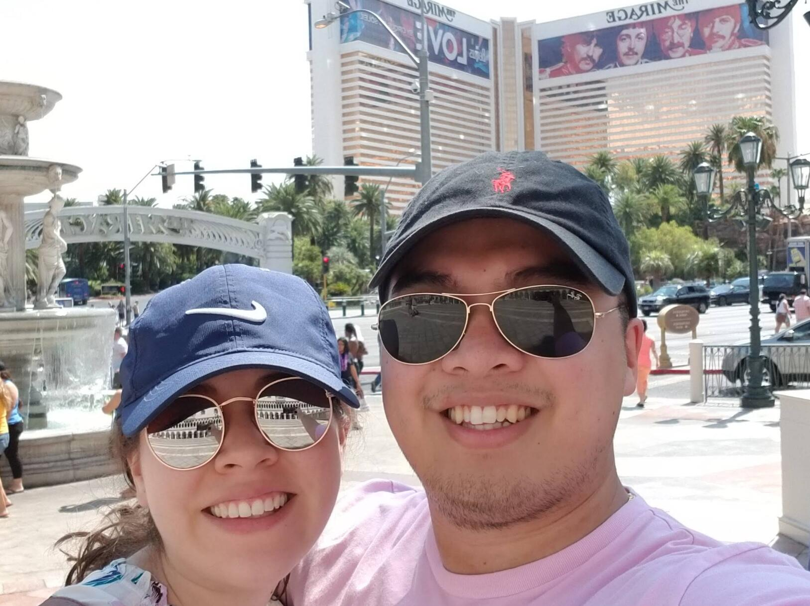
The very first Patron family trip where Cynthia was able to join! We flew to Las Vegas, Nevada and enjoyed every moment!
Cynthia and Nicko Graduate from GMU — 2019

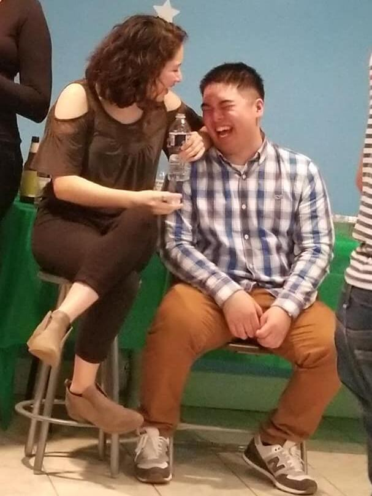
We graduated from GMU in 2019. To celebrate, we had a combined graduation party, which turned out to be one of the greatest moments in our relationship. The celebration brought family and friends from both sides together for a night to remember. We are very much looking forward to doing the same for our wedding!
Cynthia and Nicko Visit Colorado — 2020

One of our favorite cities: Denver, CO. We’ve been several times over the years. The scenic views, fresh air, and atmosphere always had us coming back for more! We also got a chance to spend time with my sister, Claudia, and her husband, Pepi, who lived there at the time. Many great and unforgettable memories were made each time we visited!
Cynthia and Nicko Move into their First Apartment — 2021
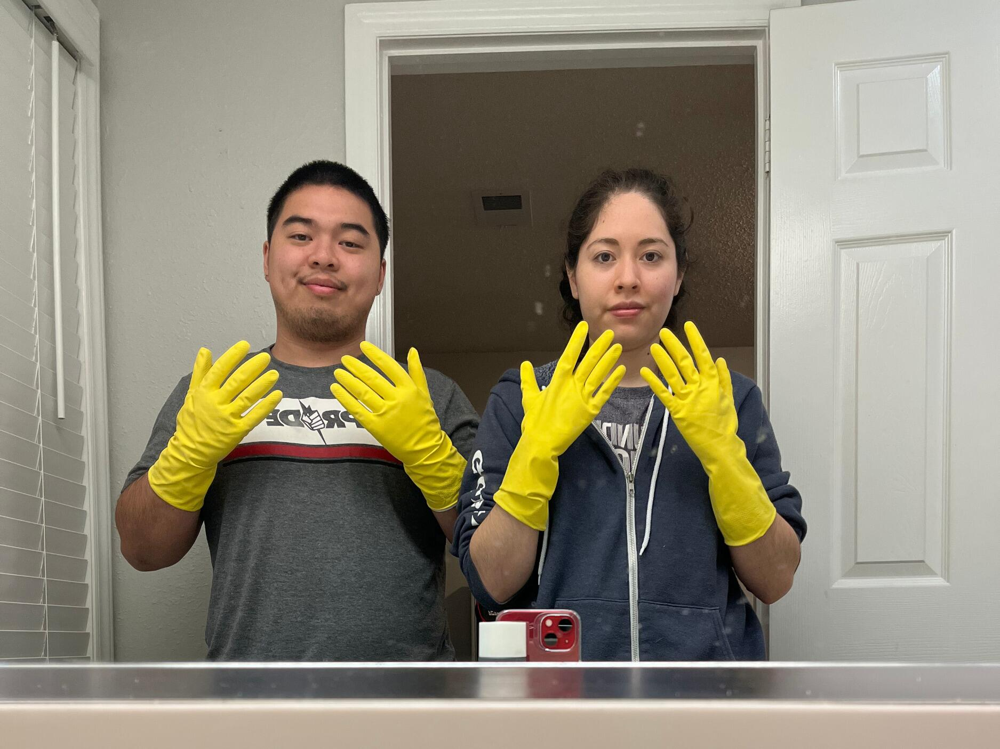
We moved down to North Carolina so that I could start PA school! We would spend the next two years of our lives here. Enjoy this picture of us in one of the first nights in our new apartment! We were about to start deep cleaning.
Cynthia and Nicko at Chez Genèse — 2022

We adjusted well to living away from home. Neither of us have ever been so far away from family and for so long. The two years flew by. We also had the wonderful support of my sister, Alejandra, and her husband, Ian, who lived near by. Many weekends were spent with them in Greensboro. Here we are in front of our favorite French restaurant. If you are ever in Greensboro, NC, check it out!
Cynthia Gradudates from PA School — 2023

The title says it all! The end of another chapter!
Nicko Proposes to Cynthia — 2024

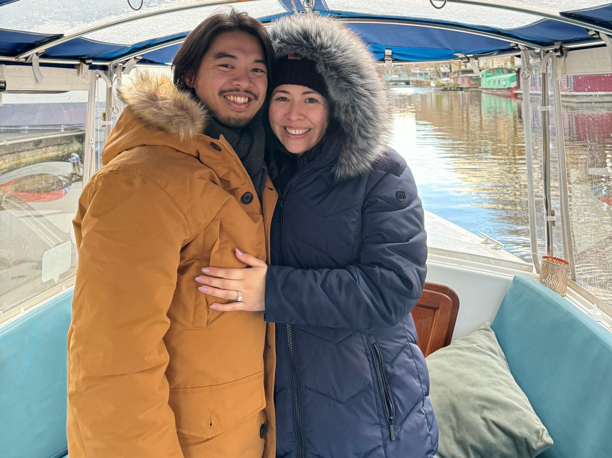
Cynthia and I had our first chance to travel outside of the U.S. together for the first time in our long journey as a couple. We decided the best place to start out was Europe. I took care of planning the transportation and lodging, Cynthia was in charge of planning activities. For our very first activity, we were supposed to catch a public ferry to tour the canals of Amsterdam. Little did she know, I switched out our public tour for a private tour! The tour company came up with a fake story; we made it to the ferry and the skipper asked if we were the family of five he was waiting on. I played along and the skipper went to 'call his manager'. Cynthia started to freak out saying things like, "I didn't book a private tour!" The skipper came back and told us that 'since he already had the boat ready to go and we were already here,' then we could just join him for the tour! After a bit of (very poor) convincing, Cynthia got on the boat. We toured the canals and eventually was taken to this spot (seen above) that was private and captured our moment.